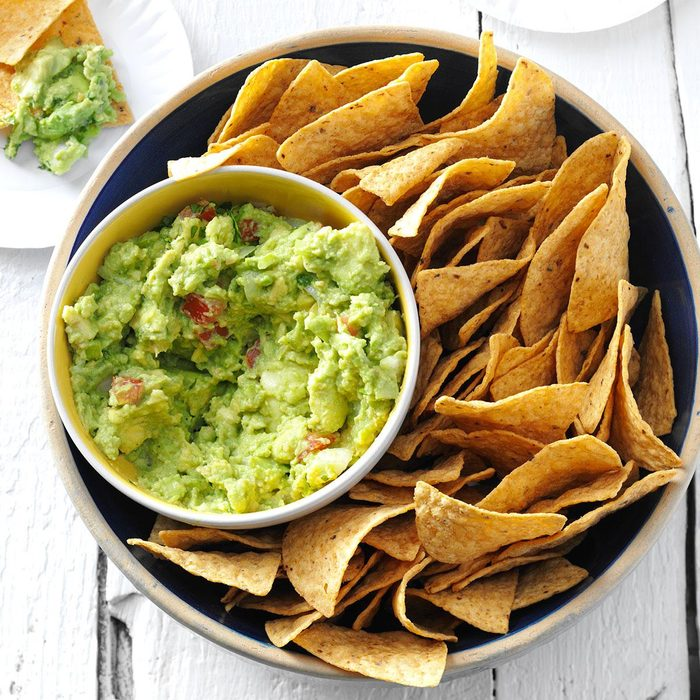

Guacamole

Restaurant-worthy guacamole is just a few ingredients away.
You'll be surprised how easy it is to make this top-rated guacamole
recipe. You'll come back to it again and again!
Ingredients
- Avocados: Of course, you'll need avocados!
- Lime: Lime juice adds brightness and slows down
the browning process.
-
Salt: A teaspoon of salt enhances the flavors of the
other ingredients.
-
Vegetables: You'll also need an onion and roma tomatoes.
-
Herbs and spices: Fresh cilantro, minced garlic, and cayenne
pepper add tons of flavor.
Steps
- Mash avocados, lime juice, and salt together in a medium bowl;
mix in tomatoes, onion, cilantro, and garlic. Stir in cayenne pepper.
-
Serve immediately, or cover and refrigerate for 1 hour for improved flavor.